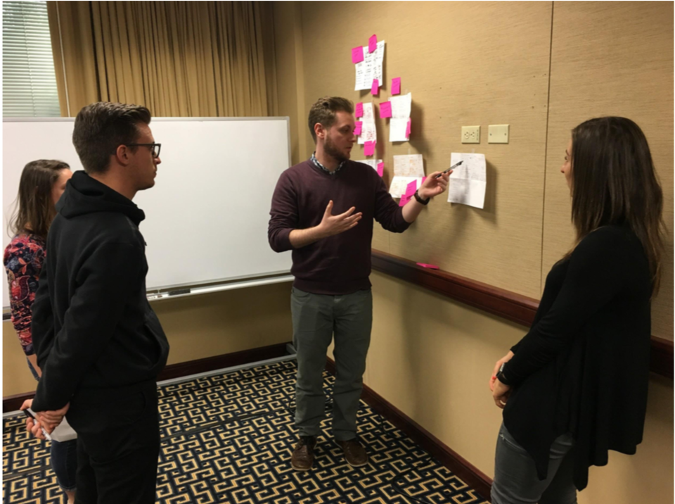

Background
One For All, a set of sustainable development goals set by the United Nations, were seeking a way in whcih to increase engagement amongst college aged users. The request included research of the target audience as well as the development of a mobile application prototype that would entice a younger population to become more involved with charitable efforts to make the world a better place.
The Process
At the outset of this project, we set out to interview as many college students as we could to determine things like how often they engage in charity and what it would take to help them become more involved. Based on our research in that phase, we created user personas that would come to inform our initial design. Prior to creating high-fidelity mockups and with our newly developed personas in mind, we held a brainstorming session to determine what our largest problems were and how we could address them through our prototype. We then built our hi-fi mockups and turned them into a prototype that enabled us to run user testing on our target audience. Based on feedback received during the testing, we implemented design changes in an agile fashion to hone in on our final design recommendation.

My Role
As a team, all members were heavily involved in each phase of the design process. I personally conducted introductory interviews, contributed to the design of both the mockup and prototype, conducted user testing, and made agile changes before creating a final presentation to deliver to our client.